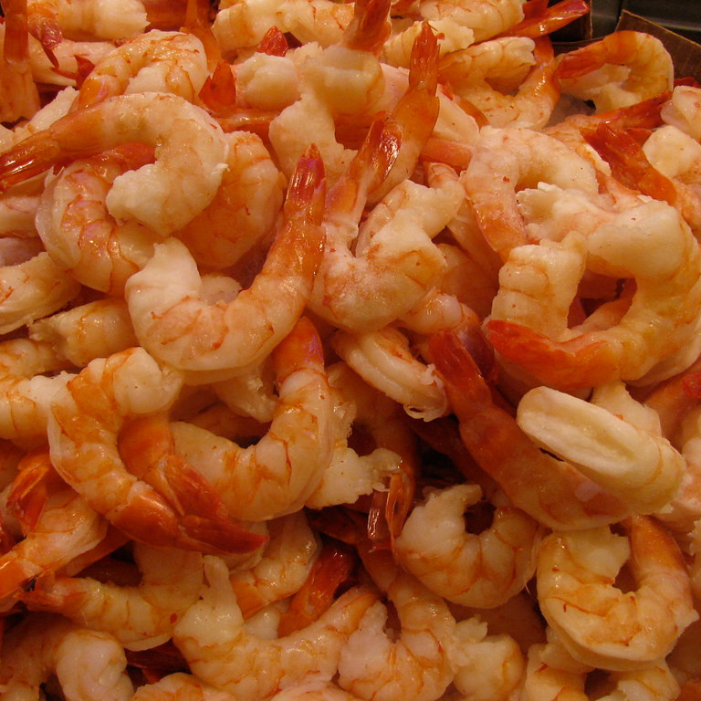
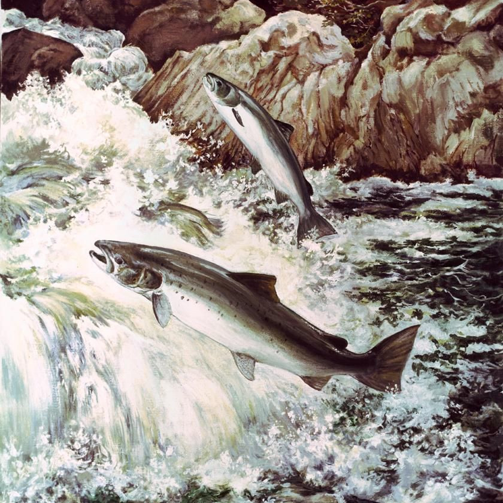
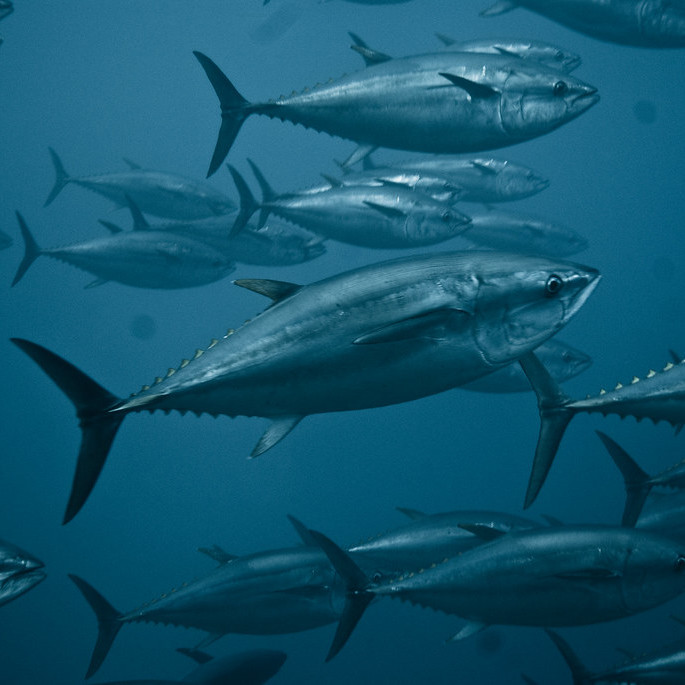
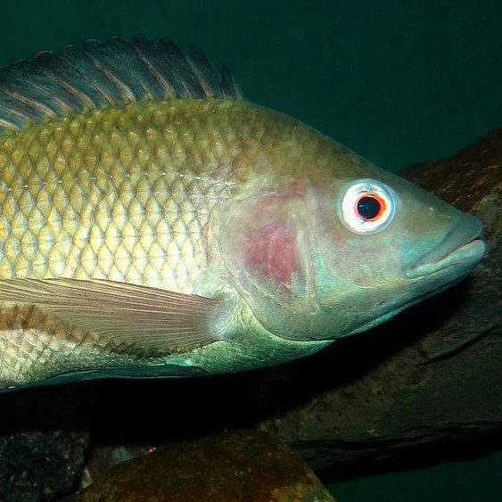
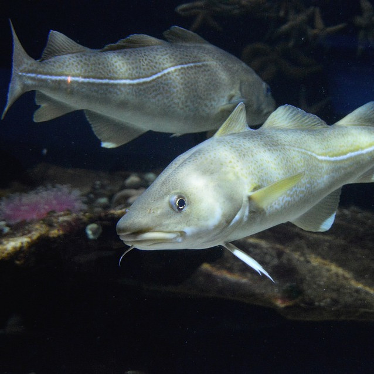
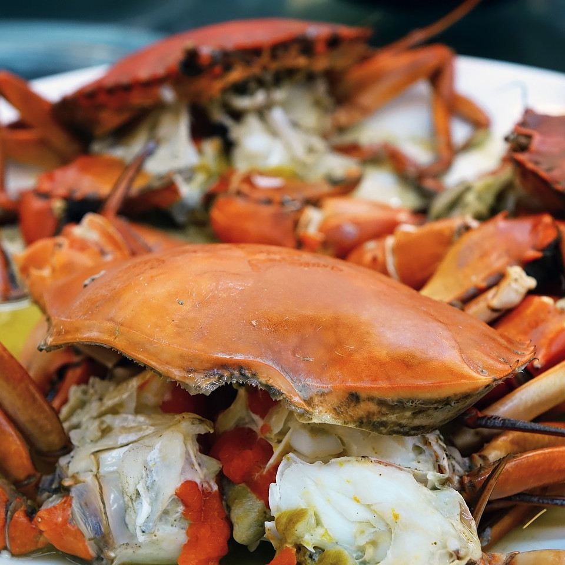
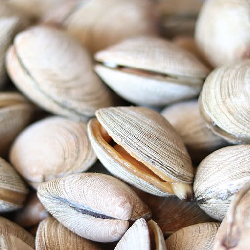

| Photo | Fish | Environmental Impact | Sustainability | Alternatives and Info |
|---|---|---|---|---|
|  | Shrimp | Low | Depends | Often a great choice of food, there are select few methods that can be harmful to the environment today. One of the most important things to look for when purchasing shrimp, is to never buy from a source that uses bottom trawling to catch the shrimp. It can have devastating effects on the seafloor ecosystem that could take up to 50 years to heal. Freshwater shrimp are the best alternative. |
|  | Salmon | Medium | Depends | Often a difficult to produce for consumption, salmon create a lot of waste when farming. This waste is often left untreated and dumped right into the ocean, causing disease to spread in areas of high farming. Wild caught salmon can be better, but only if monitored carefully and done with proper protection. With few global laws protecting salmon environments, it is quite common to over-fish an area until there are no more fish left for catchers. Marine net salmon from the atlantic are often the best choices to pick from. |
|  | Tuna | Medium | Difficult | Tuna is an incredibly delicate fish to have to catch. Many of these large creatures have been fished to near extinction now, for example to Bluefin Tuna or Yellowfin Tuna. One much safer option to go with would be Albacore Tuna, as they are heavily regulated to have safe catching laws with constant attention given to the local ecosystems. This allows for sustainable catching as well as less toxic buildup of pollutants over the fish's lifetime. Avoid trawling net caught tunas as it often leads to by-catch, which results in the loss of many unintended animals such as sharks and sea turtles ever year. |
|  | Tilapia | Low | Little | Talapia is best when it comes from south american farms such as from Ecuador and Chile. These countries have the strictest regulations on the fishing process for Talapia and it results in a healthy meal that is good for both the environment and your body. When shopping, avoid purchasing Talapia farmed in China at all costs. |
|  | Cod | Low | Depends | Most cod is wild-caught from the atlantic, which is extremely harmful to the ecosystem. Farmers in the atlantic are also not required to filter any waste produced, so it is often dumped into clean waters, which results in the spread of disease. A much better alternative is to look for Alaskan wild-caught cod, which is much more regulated. |
|  | Crab | Medium | Depends | For U.S. consumers, it is best to purchase Alaskan Crab, as environments are well protected there and there is few destructive farming practices used. As for east coast, farmed crab is a safer bet if the supplier specifies that the waste is treated before being disposed of. For U.K. consumers, Canadian farmed crab is a good bet as it is well protected and results in a healthy meal. |
|  | Clams | Low | Little | It is near impossible for clams to be harmful to the environment. They are natural cleaners of water supplies, which means they filter and keep things healthy, and eventually produce a delicious meal for people to eat. Whenever offered the opportunity and looking for a good meal, clams are the best possible choice one can make for the planet and the world ecosystems. |